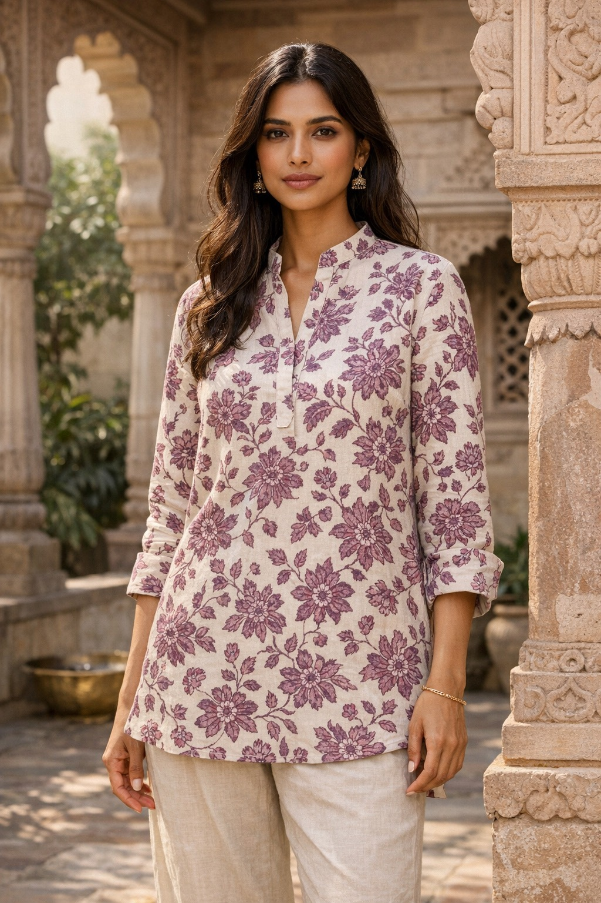
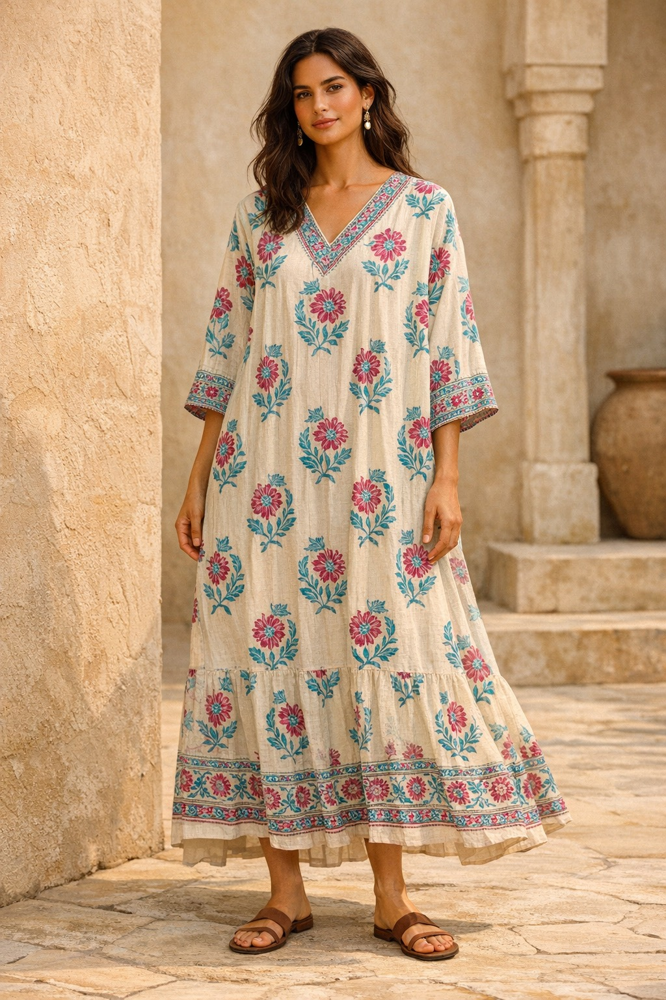
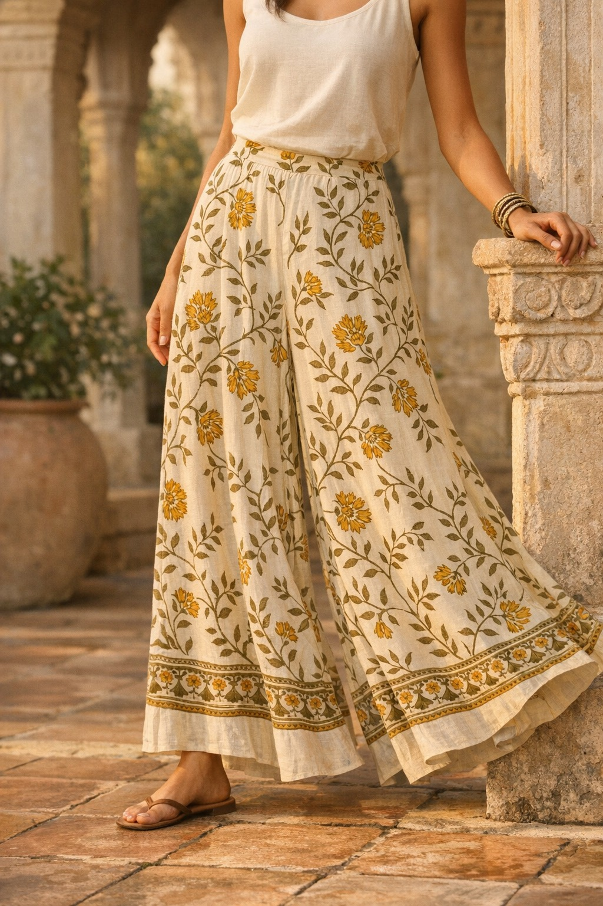
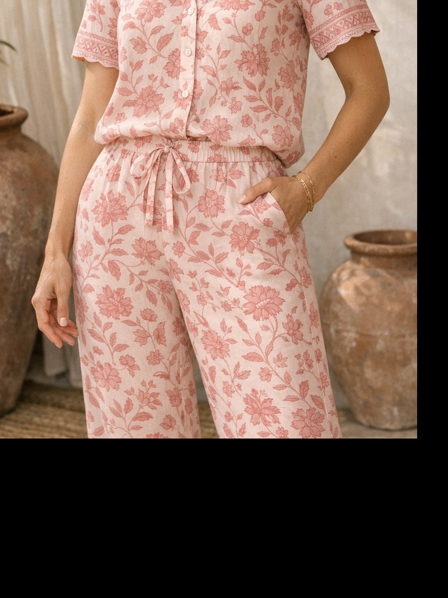
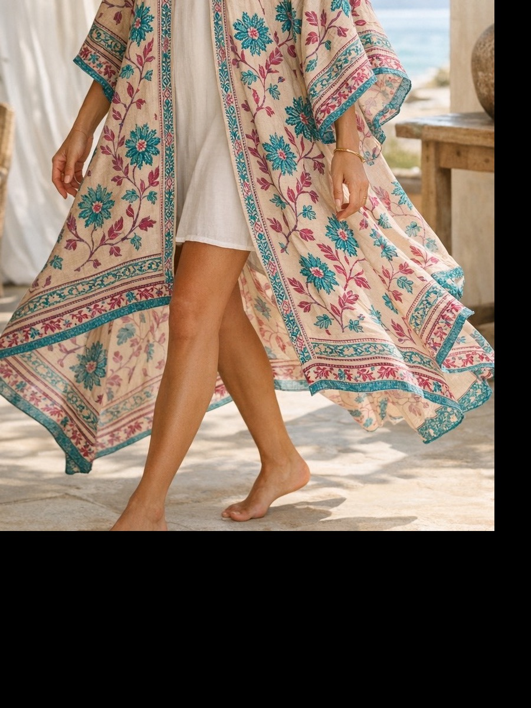
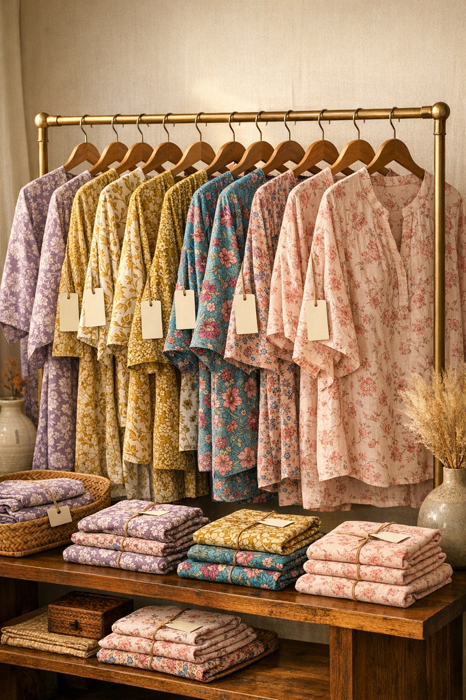

Softness as Craft
The Wear range brings our hand block printing practice into everyday clothing through breathable cotton, gentle washed handfeel, and calm colour stories that feel easy to live in. Every piece is made to sit softly on the body and age beautifully with wear.
We work with eco-friendly azo-free dyes, small-batch printing, and ethically supervised stitching at our integrated facility, so softness, comfort, and responsible production stay present from fabric to final finish.

Made for Ease

Kaftans & Tunics
Easy silhouettes in breathable cotton, designed to drape lightly and carry the softness of hand block print through every fold.
Breathable cottonShirts & Kurtas
Relaxed layers with a soft washed feel, easy structure, and gentle colour that makes everyday dressing feel calm and natural.
Low-impact colour
Trousers & Palazzos
Fluid bottoms shaped for movement and comfort, with airy volume and a softened finish that works beautifully across seasons.
Easy movement
Co-ord Sets
Thoughtful matching sets that bring print, comfort, and quiet polish together for wardrobes built around slow living.
Slow living essentials
Cover-Ups & Wraps
Light layers with an airy handfeel and easy movement, ideal for travel, resort settings, and unhurried days at home.
Lightweight layering
Private Label
Collaborative development for brands seeking soft cotton, responsible dyes, considered colour, and ethically made block print apparel.
Ethically madeMade Thoughtfully
| Attribute | Detail |
|---|---|
| Fabric | Natural cotton chosen for softness, breathability, and an easy everyday drape. |
| Print process | Hand block printing with carved wooden blocks, bringing rhythm, texture, and human touch to each piece. |
| Dyes & colour | Azo-free dyes and mindful colour palettes developed to feel gentle, calm, and lasting. |
| Finish | Carefully washed and softened so the garments feel comfortable from the first wear onward. |
| Production | Ethically supervised cutting, stitching, and finishing at our integrated facility in India. |
| Approach | Designed for slow living, thoughtful retail, and wardrobes meant to be worn and loved over time. |
Interested in the Wear range?
For private label development, calm colour stories, or ethically made cotton apparel, get in touch.